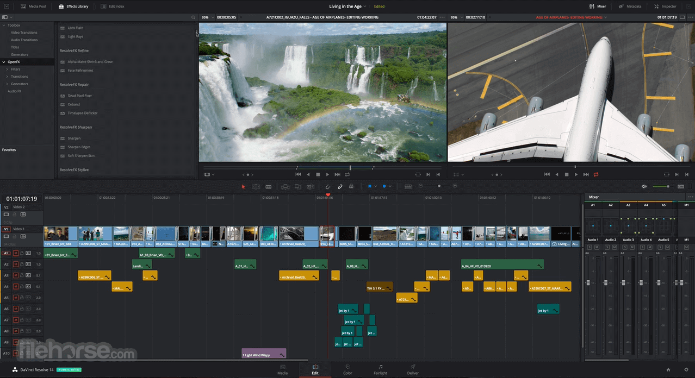
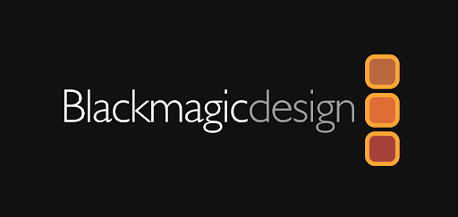

Davicni Resolve
DaVinci Resolve je postprodukční software původně vyvíjený da Vinci Systems ale momentálně patří společnosti Blackmagic Design. Původním zaměřením DaVinci Resolve byla korekce barev, ale po převzetím Blackmagic Design, se vývoj programu stočil směrem k plnohodnotnému programu na střih a úpravu videí. Momentálně program umí všechno od jednoduchého střihu videí, přes zvukový design až po efekty, hodné filmů. Některé z funkcí, ale bohužel nejsou dostupné v neplacené verzi tohoto programu. Plná verze se nazývá DaVinci Resolve Studio, ale toho se tato rovníková práce nebude týkat.
Davicni Resolve
Blackmagic Design je australská společnost založena v roce 2001 Grantem Pettym. Zaměřuje se především na výrobu videotechniky, od profesionálních kamer až po speciální panely, které zpříjemňují a urychlují práci v DaVinci Resolve. Blackmagic Design je v oboru známá značka, která zaručuje kvalitu. Ale protož je videotechnika velmi drahá, hlavně na této filmařské úrovni. Můžete očekávat, že některé kamery budou stát blízko k 10,000 dolarů.
